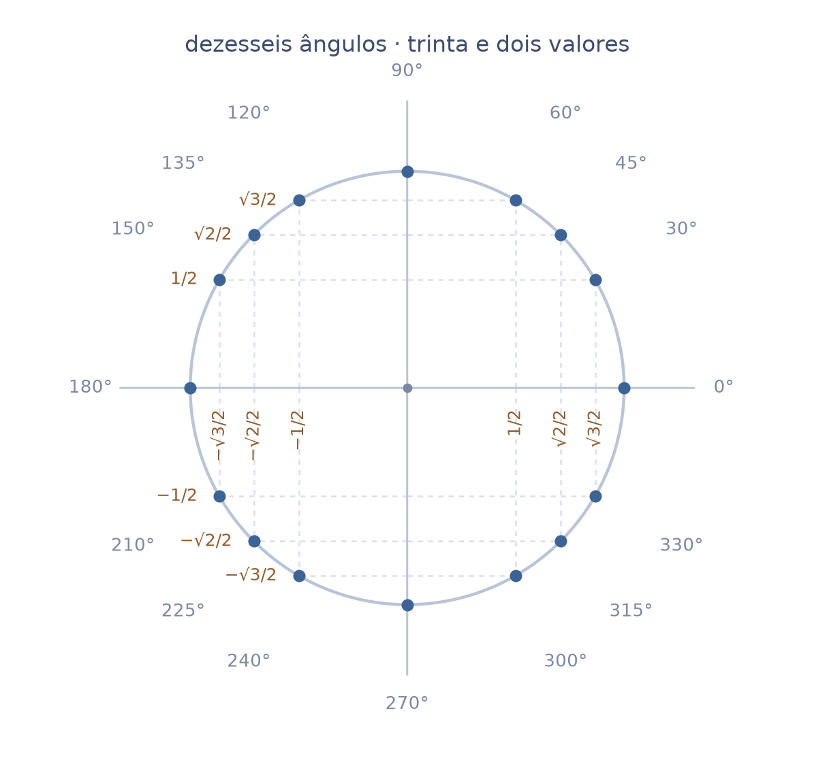
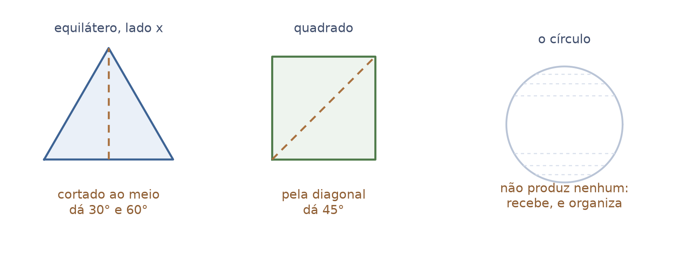
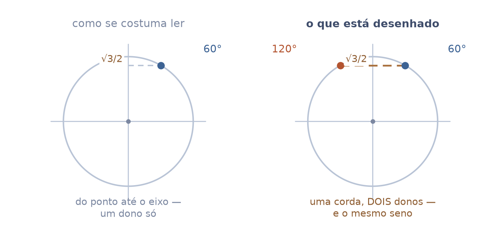
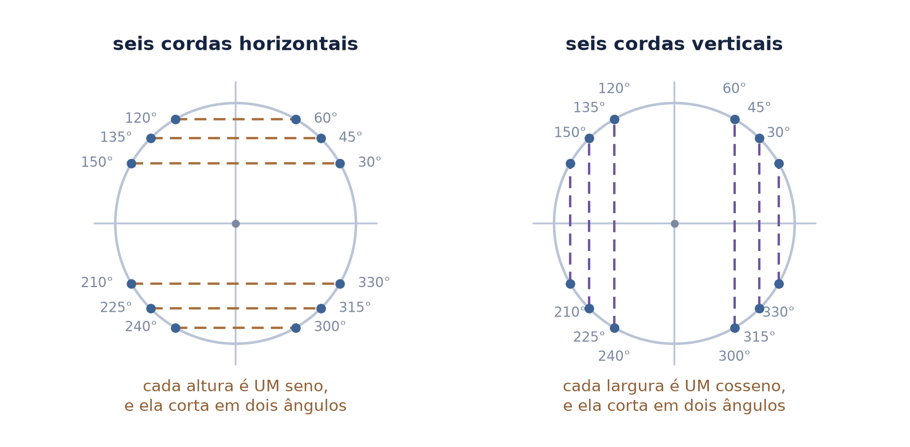
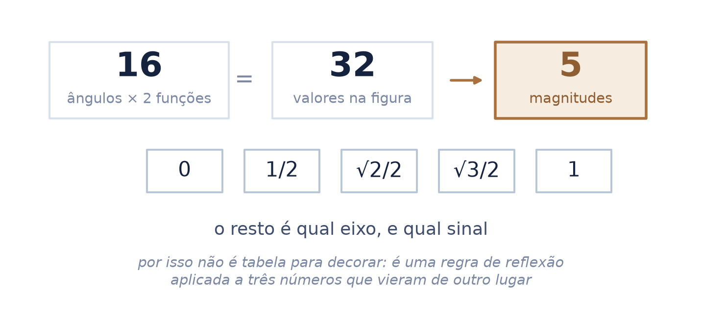
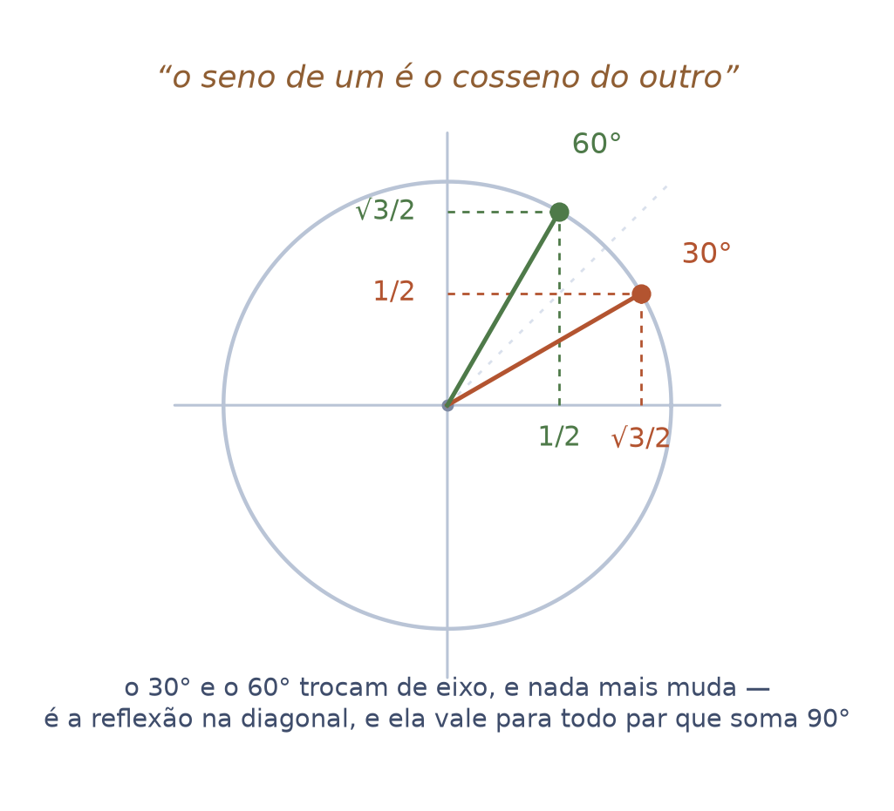
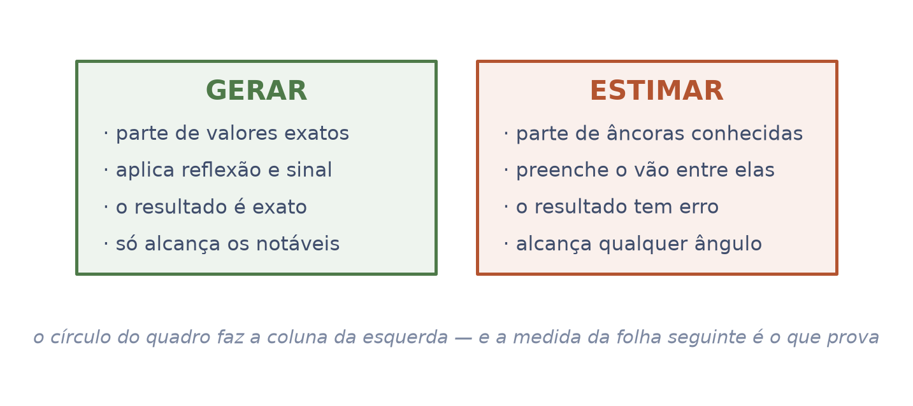
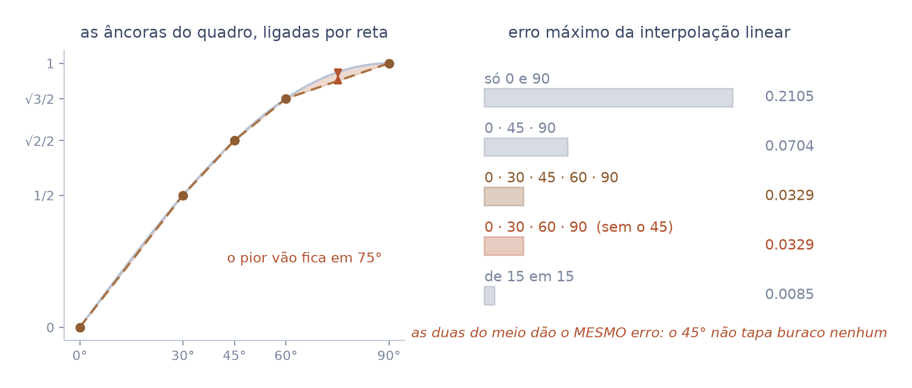
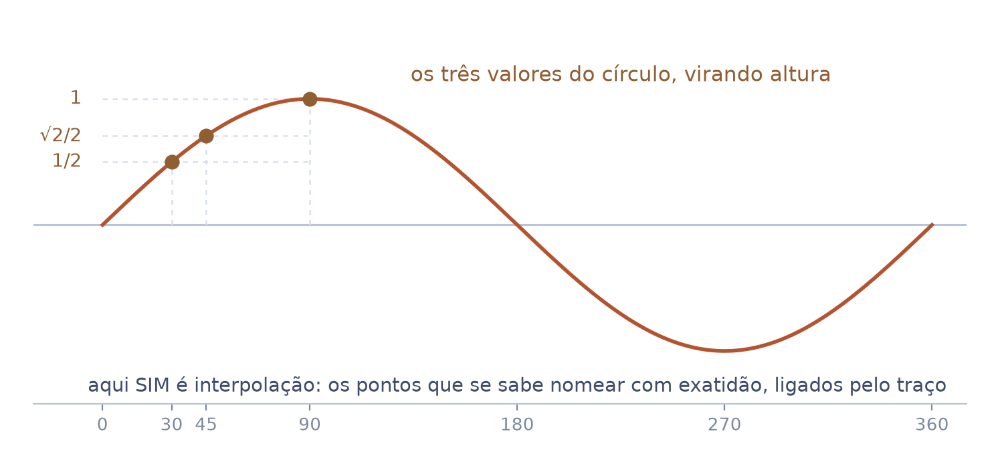
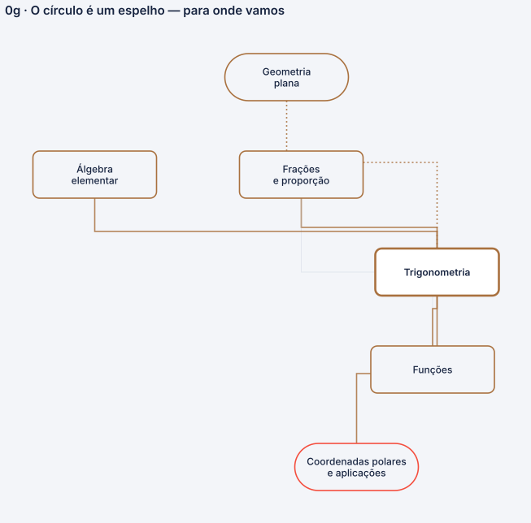

o círculo trigonométrico parece uma tabela de trinta e dois valores para decorar. São três números e um jogo de espelhos
O seminário 5 entrega o triângulo, as razões, os ângulos notáveis e o círculo de raio \(1\). Ele para exatamente aqui, e diz que para: “fica aqui o triângulo, a razão, os notáveis, o círculo de raio 1, o sinal.”
Este pega o círculo povoado — o de dezesseis ângulos, tracejados por toda parte — e mostra que ele não guarda valor nenhum: ele os gera. E mostra por que gerar não é a mesma coisa que estimar.
Autor · Mateus Felipe Alkimim Pereira
Coautora · Sara Catiele Nogueira Pereira
Orientador · Rosivaldo Antônio Gohnan
| \(\operatorname{sen}\alpha\) | lê-se “seno de alfa”. Neste seminário é a altura do ponto do círculo — a projeção no eixo vertical |
| \(\cos\alpha\) | lê-se “cosseno de alfa”. É a sombra horizontal do mesmo ponto |
| \(\tfrac{\sqrt{3}}{2}\) | lê-se “raiz de três sobre dois”. É um número, e vale cerca de \(0{,}866\) — vem do triângulo, não do círculo |
| corda | um segmento com as duas pontas na circunferência. É a palavra que falta para ler o desenho: o tracejado do quadro é corda, não ligação até o eixo |
gerar é produzir o valor exato a partir de outro já conhecido; estimar é preencher o vão entre dois conhecidos. As duas palavras aparecem juntas na Estação 4, e a diferença entre elas é o assunto da folha.
Do seminário 5: a razão como número, os notáveis vindos do equilátero e do quadrado, e o círculo de raio \(1\). Nada disso se repete aqui.
O círculo pronto para ser desenrolado — que é o C1 · Ler um gráfico, onde a projeção vira função de uma variável.
Este é o desenho que aparece no quadro e em toda apostila: dezesseis ângulos, cada um com um seno e um cosseno. Trinta e dois valores, metade deles com raiz, metade com sinal.
Olhado como lista, é intransponível — e é assim que quase sempre é apresentado. Olhado como desenho, tem uma estrutura que reduz tudo a três números.
a folha seguinte começa tirando uma coisa do caminho: o círculo não produz nenhum desses valores.

\(\tfrac{1}{2}\) e \(\tfrac{\sqrt{3}}{2}\) saem do triângulo equilátero cortado ao meio. \(\tfrac{\sqrt{2}}{2}\) sai do quadrado cortado pela diagonal. Duas figuras, três números — e é o seminário 5 que faz as duas contas.
O círculo não deduz nada disso. Ele recebe os três e os coloca num lugar onde a repetição fica visível. É um móvel, não uma fábrica.
saber disso muda como se estuda: quem não consegue reconstruir os três números não deve tentar decorar o círculo. O círculo é o passo depois.

Quase todo mundo lê o tracejado como uma ligação do ponto até o eixo — uma seta de leitura, um dono só. No quadro do professor ele atravessa o círculo inteiro.
A diferença não é de estilo. Uma corda horizontal encosta na circunferência em dois pontos, e os dois têm a mesma altura — logo o mesmo seno. Por isso ele escreveu os ângulos nas duas pontas de cada tracejado.
Na foto, a linha da altura \(\tfrac{\sqrt{3}}{2}\) tem “120°” escrito na ponta esquerda e “60°” na direita. O mesmo em todas as outras.

Seis cordas horizontais, uma por altura, e cada uma serve a dois ângulos: \(60\) e \(120\) partilham \(\tfrac{\sqrt{3}}{2}\); \(45\) e \(135\) partilham \(\tfrac{\sqrt{2}}{2}\); \(30\) e \(150\) partilham \(\tfrac{1}{2}\). Embaixo do eixo, o mesmo com o sinal trocado.
Seis cordas verticais fazem o mesmo pelo cosseno, com outro emparelhamento: ali quem partilha \(\tfrac{\sqrt{3}}{2}\) são \(30\) e \(330\).
os quatro ângulos que sobram — \(0\), \(90\), \(180\) e \(270\) — não precisam de corda: eles estão nos eixos, e valem \(0\) ou \(\pm 1\).

Some tudo o que está no desenho: dezesseis ângulos, dois valores em cada, trinta e dois ao todo. Agora conte quantos números diferentes aparecem, ignorando o sinal.
São cinco: \(0\), \(\tfrac{1}{2}\), \(\tfrac{\sqrt{2}}{2}\), \(\tfrac{\sqrt{3}}{2}\) e \(1\). Todo o resto é qual eixo e qual sinal — duas escolhas binárias.
é por isso que não é tabela. Uma tabela guarda trinta e dois fatos independentes; isto guarda três, mais uma regra de reflexão que se aplica sozinha.

Os dois eixos carregam os mesmos três números, em ordem invertida. Subindo, o vertical vai \(\tfrac{1}{2}\), \(\tfrac{\sqrt{2}}{2}\), \(\tfrac{\sqrt{3}}{2}\); indo para a direita, o horizontal vai na ordem contrária.
Isso não é coincidência de tabela: é a reflexão na diagonal. Trocar \(\alpha\) por \(90^\circ - \alpha\) troca os dois eixos de lugar, e mais nada muda.
“Faz o ângulo alfa e faz o complementar deste ângulo, por exemplo noventa menos alfa: o seno de um é o cosseno do outro.”

Olhando esse círculo, é natural pensar: “tenho valores marcados de \(30\) em \(30\), então posso chutar os que estão no meio”. A ideia é boa e não é o que o desenho faz.
Ele gera: cada valor sai exato de outro, por reflexão. Nunca há aproximação — e, em troca, ele só alcança os dezesseis ângulos que a simetria produz. Não diz nada sobre \(37^\circ\).
as duas coisas são úteis e são diferentes. Confundi-las faz esperar do círculo uma precisão que ele não promete — e ignorar a que ele entrega.

Dá para testar se a grade foi feita para estimar. Ligue as âncoras por retas e meça o pior erro. Com \(0\), \(30\), \(45\), \(60\) e \(90\), ele é \(0{,}0329\) — seis vezes melhor que só com as pontas.
Agora tire o \(45\). O erro é exatamente o mesmo, no mesmo lugar: \(75^\circ\). O pior vão é de \(60\) a \(90\), onde a curva mais dobra — e o \(45\) não fica lá.
quem projeta grade para estimar põe âncora onde a curva encurva. Ele pôs onde a simetria fecha. A medida diz para que serve o desenho, e não é para interpolar.

No mesmo quadro, à direita, ele desenhou a onda do seno — e marcou no eixo vertical exatamente \(1\), \(\tfrac{\sqrt{2}}{2}\) e \(\tfrac{1}{2}\), com tracejados subindo de \(30\), \(45\) e \(90\).
Ele transportou as âncoras do círculo para o gráfico e passou a curva por elas à mão. Isso é interpolação, no sentido próprio: os pontos que se sabe nomear com exatidão, ligados pelo traço. É assim que qualquer pessoa desenha um seno sem calculadora.
o círculo gera os pontos; o gráfico liga os pontos. Dois objetos, duas operações — e é por isso que os dois existem.

| uma palavra | corda — o tracejado atravessa, e por isso tem dois donos |
| uma estrutura | doze cordas organizam dezesseis ângulos |
| uma conta | trinta e dois valores, cinco magnitudes |
| uma origem | os três números vêm de duas figuras, não do círculo |
| uma distinção | gerar é exato e limitado; estimar é aproximado e universal |
| uma medida | tirar o \(45\) não piora o erro — logo a grade é de simetria |
Este nó da base é consumido por Ler um gráfico, onde o círculo é desenrolado e a projeção vira função.

Abrimos dizendo que o círculo parece trinta e dois valores para decorar. Ele é três, e o resto é a mesma pergunta feita ao outro eixo, ou do outro lado do zero.
Quem lê o tracejado como corda vê a estrutura de uma vez: cada linha tem dois donos, e o desenho inteiro é a frase do professor — o seno de um é o cosseno do outro — repetida dezesseis vezes.
Parecia uma grade para estimar valores entre os marcados. A conta desmentiu: tirar o \(45^\circ\) não piora o erro em nada. Uma grade de estimativa põe âncora onde a curva dobra; esta põe onde a simetria fecha.
a estimativa tem lugar, e é o gráfico — onde as mesmas três alturas viram os pontos por onde a curva passa.
| o desenho | o quadro da aula particular de 30/08/2026, fotografado — as cordas, os pares de ângulos nas pontas, os valores nos dois eixos |
| a frase | áudio da mesma aula, 29 min — o seno de um é o cosseno do outro |
| as contas | o emparelhamento das doze cordas e a tabela de erro, gerados e conferidos em Python |
O transcrito não narra o círculo. Duas sondas independentes — a fala dele e o diálogo completo — devolvem zero para “círculo”, “circunferência” e “quadrante”. Aos 29 min ele anuncia as deduções de \(30\) e \(60\) no futuro, e a conversa vira filosofia da matemática.
O desenrolamento do círculo em onda e a tangente como comprimento — que são do C1 · Ler um gráfico. As identidades e os notáveis, que são do seminário 5. E radianos, que não aparecem no quadro.
a leitura do quadro é sonda com erro próprio — letra à mão, vidro com reflexo, foto em ângulo — e está registrada, com duas leituras independentes, ao lado das fotos.